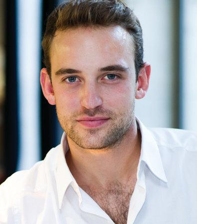

In foto lo scrittore Joël Dicker
| Home | La verità sul caso Harry Quebert | L'enigma della camera 622 |
Joël Dicker è nato il 16 giugno 1985 a Ginevra, nella zona francofona della Svizzera, figlio di una bibliotecaria e di un insegnante di francese.
Dicker è cresciuto a Ginevra, frequentando il Collège Madame de Staël, senza tuttavia essere molto attratto dagli studi. All'età di 19 anni ha preso lezioni di recitazione all'accademia di arte drammatica Cours Florent di Parigi. Un anno dopo è tornato a Ginevra per studiare legge presso l'Università di Ginevra, laureandosi nel 2010.
Il primo romanzo scritto da Dicker è intitolato "Gli ultimi giorni dei nostri padri", e racconta la storia del SOE, un ramo segreto del Secret Intelligence Service. Malgrado l'avere terminato la stesura dell'opera nel 2009, inizialmente Dicker non ha trovato alcun editore disposto a pubblicarlo.
Nel dicembre 2010, il romanzo ha vinto il concorso del Prix Genevois des Ecrivains, importante premio assegnato ogni quattro anni, riservato unicamente ad opere inedite.
Successivamente, il titolare della casa editrice svizzera L'Âge d'Homme, Vladimir Dimitrijevic, lo ha contattato dichiarando il proprio interesse per la pubblicazione del suo romanzo. Dimitrijevic era dell'idea di lanciare il libro in Svizzera nell'aprile 2010, ma in seguito ha notato che il tema del libro avrebbe potuto suscitare l'interesse del pubblico francese, proponendo così di posticipare il lancio fino al settembre 2010. Nel mese di giugno però, Dimitrijevic è morto in un incidente stradale in viaggio verso Parigi
|
In foto lo scrittore Joël Dicker |
 |